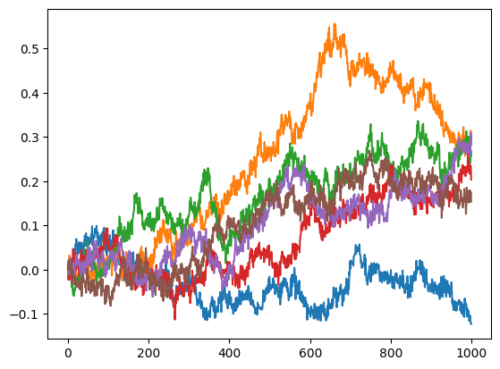
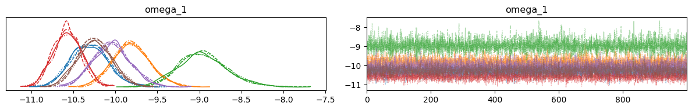
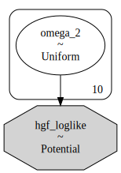

Parameters recovery, prior predictive and posterior predictive sampling#
from numpy import loadtxt
import numpy as np
from pyhgf.distribution import hgf_logp, HGFDistribution
from pyhgf import load_data
from pyhgf.response import total_binary_surprise
import jax.numpy as jnp
import numpy as np
import pymc as pm
import arviz as az
import matplotlib.pyplot as plt
np.random.seed(123)
No GPU/TPU found, falling back to CPU. (Set TF_CPP_MIN_LOG_LEVEL=0 and rerun for more info.)
In this tutorial, we are going to demonstrate some forms of parameters recovery, prior predictive and posterior predictive sampling that can be a way to assess the strength of the model fitting.
Continuous HGF#
Simulate a dataset#
n_data = 6
dataset = []
for participant in range(n_data):
input_data = []
kappa_1 = 1.0
omega_1 = -10.0
omega_2 = -10.0
mu_1 = 0.0
mu_2 = 0.0
pi_1 = 1e4
pi_2 = 1e1
# two-level hierarchical gaussian random walk
for i in range(1000):
# x2
pi_2 = np.exp(omega_2)
mu_2 = np.random.normal(mu_2, pi_2**.5)
# x1
pi_1 = np.exp(kappa_1 * mu_2 + omega_1)
mu_1 = np.random.normal(mu_1, pi_1**.5)
# input node
u = np.random.normal(mu_1, 1e-4**.5)
input_data.append(u)
dataset.append(input_data)
for rw in dataset:
plt.plot(rw)

Embedding a serie of HGFs in a graphical model#
Here, we are goingin to estimate the parameter \(omega_{1}\) from the time series created by the hierarchical random walks. All the time series were generated using \(omega_{1} = -10.0\) and we want to see how the Bayesian inference can retrieve these values.
hgf_logp_op = HGFDistribution(
n_levels=2,
model_type="continuous",
input_data=dataset,
)
with pm.Model() as model:
# Priors
#-------
omega_1 = pm.Normal("omega_1", mu=0.0, sigma=2.0, shape=n_data)
pm.Potential(
"hgf_loglike",
hgf_logp_op(
omega_1=omega_1,
omega_2=-10.0,
omega_input=np.log(1e-4),
rho_1=0.0,
rho_2=0.0,
pi_1=1e4,
pi_2=1e1,
mu_1=0.0,
mu_2=0.0,
kappa_1=1.0,
omega_3=jnp.nan,
rho_3=jnp.nan,
pi_3=jnp.nan,
mu_3=jnp.nan,
kappa_2=jnp.nan
),
)
pm.model_to_graphviz(model)

with model:
idata = pm.sample(chains=4, cores=4, tune=1000)
Auto-assigning NUTS sampler...
Initializing NUTS using jitter+adapt_diag...
Multiprocess sampling (4 chains in 4 jobs)
NUTS: [omega_1]
100.00% [8000/8000 00:54<00:00 Sampling 4 chains, 0 divergences]
Sampling 4 chains for 1_000 tune and 1_000 draw iterations (4_000 + 4_000 draws total) took 55 seconds.
az.plot_trace(idata);
plt.tight_layout()

az.summary(idata)
| mean | sd | hdi_3% | hdi_97% | mcse_mean | mcse_sd | ess_bulk | ess_tail | r_hat | |
|---|---|---|---|---|---|---|---|---|---|
| omega_1[0] | -10.307 | 0.223 | -10.712 | -9.887 | 0.003 | 0.002 | 4172.0 | 2765.0 | 1.0 |
| omega_1[1] | -9.807 | 0.223 | -10.214 | -9.364 | 0.003 | 0.002 | 5726.0 | 3240.0 | 1.0 |
| omega_1[2] | -8.954 | 0.296 | -9.527 | -8.418 | 0.004 | 0.003 | 5011.0 | 2766.0 | 1.0 |
| omega_1[3] | -10.569 | 0.171 | -10.883 | -10.253 | 0.002 | 0.002 | 5743.0 | 3303.0 | 1.0 |
| omega_1[4] | -10.043 | 0.222 | -10.437 | -9.613 | 0.003 | 0.002 | 4428.0 | 3015.0 | 1.0 |
| omega_1[5] | -10.241 | 0.200 | -10.595 | -9.844 | 0.003 | 0.002 | 5013.0 | 2998.0 | 1.0 |
Binary HGF#
Simulate a dataset#
n_data = 10
dataset = []
for participant in range(n_data):
input_data = []
omega_2 = -1.0
mu_2 = -1.0
for i in range(1000):
# x2
pi_2 = np.exp(omega_2)
mu_2 = np.random.normal(mu_2, pi_2**.5)
# x1
s2 = 1/(1+np.exp(-mu_2)) # sigmoid function
u = np.random.binomial(n=1, p=s2)
input_data.append(u)
dataset.append(input_data)
Bayesian inference#
hgf_logp_op = HGFDistribution(
n_levels=2,
model_type="binary",
input_data=dataset,
response_function=total_binary_surprise,
)
with pm.Model() as two_levels_binary_hgf:
omega_2 = pm.Uniform("omega_2", -5.0, 0.0, shape=n_data)
pm.Potential(
"hgf_loglike",
hgf_logp_op(
omega_1=jnp.nan,
omega_2=omega_2,
omega_input=jnp.nan,
rho_1=0.0,
rho_2=0.0,
pi_1=0.0,
pi_2=1e4,
mu_1=jnp.nan,
mu_2=0.0,
kappa_1=1.0,
omega_3=jnp.nan,
rho_3=jnp.nan,
pi_3=jnp.nan,
mu_3=jnp.nan,
kappa_2=jnp.nan
),
)
Visualizing the model#
pm.model_to_graphviz(two_levels_binary_hgf)

Sampling#
with two_levels_binary_hgf:
two_level_hgf_idata = pm.sample(chains=4)
Auto-assigning NUTS sampler...
Initializing NUTS using jitter+adapt_diag...
---------------------------------------------------------------------------
TypeError Traceback (most recent call last)
File /opt/hostedtoolcache/Python/3.9.16/x64/lib/python3.9/site-packages/pytensor/compile/function/types.py:972, in Function.__call__(self, *args, **kwargs)
970 try:
971 outputs = (
--> 972 self.vm()
973 if output_subset is None
974 else self.vm(output_subset=output_subset)
975 )
976 except Exception:
File /opt/hostedtoolcache/Python/3.9.16/x64/lib/python3.9/site-packages/pytensor/graph/op.py:544, in Op.make_py_thunk.<locals>.rval(p, i, o, n, params)
540 @is_thunk_type
541 def rval(
542 p=p, i=node_input_storage, o=node_output_storage, n=node, params=None
543 ):
--> 544 r = p(n, [x[0] for x in i], o)
545 for o in node.outputs:
File ~/work/pyhgf/pyhgf/pyhgf/distribution.py:520, in HGFDistribution.perform(self, node, inputs, outputs)
519 """Run the function forward."""
--> 520 result = self.hgf_logp(*inputs)
521 outputs[0][0] = np.asarray(result, dtype=node.outputs[0].dtype)
[... skipping hidden 12 frame]
File ~/work/pyhgf/pyhgf/pyhgf/distribution.py:201, in hgf_logp(omega_1, omega_2, omega_3, omega_input, rho_1, rho_2, rho_3, pi_1, pi_2, pi_3, mu_1, mu_2, mu_3, kappa_1, kappa_2, input_data, response_function, model_type, n_levels, response_function_parameters, time)
198 kappas: Dict[str, Optional[float]] = {"1": kappa_1[i], "2": kappa_2[i]}
200 surprise = surprise + (
--> 201 HGF(
202 initial_mu=initial_mu,
203 initial_pi=initial_pi,
204 omega=omega,
205 omega_input=omega_input[i],
206 rho=rho,
207 kappas=kappas,
208 model_type=model_type,
209 n_levels=n_levels,
210 eta0=0.0,
211 eta1=1.0,
212 pihat=jnp.inf,
213 verbose=False,
214 )
215 .input_data(input_data=input_data[i], time=time[i])
216 .surprise(
217 response_function=response_function,
218 response_function_parameters=response_function_parameters,
219 )
220 )
222 # Return the sum of the log probabilities (negative surprise)
File ~/work/pyhgf/pyhgf/pyhgf/model.py:292, in HGF.input_data(self, input_data, time)
291 elif self.model_type == "binary":
--> 292 _, scan_updates = scan(loop_binary_inputs, res_init, data[1:, :])
293 else:
[... skipping hidden 2 frame]
File /opt/hostedtoolcache/Python/3.9.16/x64/lib/python3.9/site-packages/jax/_src/lax/control_flow/common.py:108, in _check_tree_and_avals(what, tree1, avals1, tree2, avals2)
106 diff = tree_map(_show_diff, tree_unflatten(tree1, avals1),
107 tree_unflatten(tree2, avals2))
--> 108 raise TypeError(f"{what} must have identical types, got\n{diff}.")
TypeError: scan carry output and input must have identical types, got
(({'eta0': 'ShapedArray(float32[], weak_type=True)', 'eta1': 'ShapedArray(float32[], weak_type=True)', 'pihat': 'ShapedArray(float32[], weak_type=True)'}, (({'kappas': ('ShapedArray(float32[])',), 'mu': 'ShapedArray(float32[])', 'muhat': 'ShapedArray(float32[])', 'nu': 'ShapedArray(float32[], weak_type=True)', 'omega': 'ShapedArray(float32[])', 'pi': 'ShapedArray(float32[])', 'pihat': 'ShapedArray(float32[])', 'psis': None, 'rho': 'ShapedArray(float32[])'}, (({'kappas': None, 'mu': 'ShapedArray(float32[])', 'muhat': 'ShapedArray(float32[])', 'nu': 'ShapedArray(float32[])', 'omega': 'ShapedArray(float32[])', 'pi': 'ShapedArray(float32[])', 'pihat': 'ShapedArray(float32[])', 'psis': None, 'rho': 'ShapedArray(float32[])'}, None, None),), None),), None), {'surprise': 'ShapedArray(float32[])', 'time': 'ShapedArray(float32[])', 'value': 'DIFFERENT ShapedArray(float32[]) vs. ShapedArray(int32[])'}).
During handling of the above exception, another exception occurred:
TypeError Traceback (most recent call last)
Cell In[14], line 2
1 with two_levels_binary_hgf:
----> 2 two_level_hgf_idata = pm.sample(chains=4)
File /opt/hostedtoolcache/Python/3.9.16/x64/lib/python3.9/site-packages/pymc/sampling/mcmc.py:461, in sample(draws, step, init, n_init, initvals, trace, chains, cores, tune, progressbar, model, random_seed, discard_tuned_samples, compute_convergence_checks, callback, jitter_max_retries, return_inferencedata, keep_warning_stat, idata_kwargs, mp_ctx, **kwargs)
459 [kwargs.setdefault(k, v) for k, v in nuts_kwargs.items()]
460 _log.info("Auto-assigning NUTS sampler...")
--> 461 initial_points, step = init_nuts(
462 init=init,
463 chains=chains,
464 n_init=n_init,
465 model=model,
466 random_seed=random_seed_list,
467 progressbar=progressbar,
468 jitter_max_retries=jitter_max_retries,
469 tune=tune,
470 initvals=initvals,
471 **kwargs,
472 )
474 if initial_points is None:
475 # Time to draw/evaluate numeric start points for each chain.
476 ipfns = make_initial_point_fns_per_chain(
477 model=model,
478 overrides=initvals,
479 jitter_rvs=set(),
480 chains=chains,
481 )
File /opt/hostedtoolcache/Python/3.9.16/x64/lib/python3.9/site-packages/pymc/sampling/mcmc.py:1089, in init_nuts(init, chains, n_init, model, random_seed, progressbar, jitter_max_retries, tune, initvals, **kwargs)
1082 _log.info(f"Initializing NUTS using {init}...")
1084 cb = [
1085 pm.callbacks.CheckParametersConvergence(tolerance=1e-2, diff="absolute"),
1086 pm.callbacks.CheckParametersConvergence(tolerance=1e-2, diff="relative"),
1087 ]
-> 1089 initial_points = _init_jitter(
1090 model,
1091 initvals,
1092 seeds=random_seed_list,
1093 jitter="jitter" in init,
1094 jitter_max_retries=jitter_max_retries,
1095 )
1097 apoints = [DictToArrayBijection.map(point) for point in initial_points]
1098 apoints_data = [apoint.data for apoint in apoints]
File /opt/hostedtoolcache/Python/3.9.16/x64/lib/python3.9/site-packages/pymc/sampling/mcmc.py:983, in _init_jitter(model, initvals, seeds, jitter, jitter_max_retries)
981 if i < jitter_max_retries:
982 try:
--> 983 model.check_start_vals(point)
984 except SamplingError:
985 # Retry with a new seed
986 seed = rng.randint(2**30, dtype=np.int64)
File /opt/hostedtoolcache/Python/3.9.16/x64/lib/python3.9/site-packages/pymc/model.py:1765, in Model.check_start_vals(self, start)
1759 valid_keys = ", ".join(value_names_set)
1760 raise KeyError(
1761 "Some start parameters do not appear in the model!\n"
1762 f"Valid keys are: {valid_keys}, but {extra_keys} was supplied"
1763 )
-> 1765 initial_eval = self.point_logps(point=elem)
1767 if not all(np.isfinite(v) for v in initial_eval.values()):
1768 raise SamplingError(
1769 "Initial evaluation of model at starting point failed!\n"
1770 f"Starting values:\n{elem}\n\n"
1771 f"Initial evaluation results:\n{initial_eval}"
1772 )
File /opt/hostedtoolcache/Python/3.9.16/x64/lib/python3.9/site-packages/pymc/model.py:1799, in Model.point_logps(self, point, round_vals)
1793 factors = self.basic_RVs + self.potentials
1794 factor_logps_fn = [at.sum(factor) for factor in self.logp(factors, sum=False)]
1795 return {
1796 factor.name: np.round(np.asarray(factor_logp), round_vals)
1797 for factor, factor_logp in zip(
1798 factors,
-> 1799 self.compile_fn(factor_logps_fn)(point),
1800 )
1801 }
File /opt/hostedtoolcache/Python/3.9.16/x64/lib/python3.9/site-packages/pymc/pytensorf.py:764, in PointFunc.__call__(self, state)
763 def __call__(self, state):
--> 764 return self.f(**state)
File /opt/hostedtoolcache/Python/3.9.16/x64/lib/python3.9/site-packages/pytensor/compile/function/types.py:985, in Function.__call__(self, *args, **kwargs)
983 if hasattr(self.vm, "thunks"):
984 thunk = self.vm.thunks[self.vm.position_of_error]
--> 985 raise_with_op(
986 self.maker.fgraph,
987 node=self.vm.nodes[self.vm.position_of_error],
988 thunk=thunk,
989 storage_map=getattr(self.vm, "storage_map", None),
990 )
991 else:
992 # old-style linkers raise their own exceptions
993 raise
File /opt/hostedtoolcache/Python/3.9.16/x64/lib/python3.9/site-packages/pytensor/link/utils.py:536, in raise_with_op(fgraph, node, thunk, exc_info, storage_map)
531 warnings.warn(
532 f"{exc_type} error does not allow us to add an extra error message"
533 )
534 # Some exception need extra parameter in inputs. So forget the
535 # extra long error message in that case.
--> 536 raise exc_value.with_traceback(exc_trace)
File /opt/hostedtoolcache/Python/3.9.16/x64/lib/python3.9/site-packages/pytensor/compile/function/types.py:972, in Function.__call__(self, *args, **kwargs)
969 t0_fn = time.perf_counter()
970 try:
971 outputs = (
--> 972 self.vm()
973 if output_subset is None
974 else self.vm(output_subset=output_subset)
975 )
976 except Exception:
977 restore_defaults()
File /opt/hostedtoolcache/Python/3.9.16/x64/lib/python3.9/site-packages/pytensor/graph/op.py:544, in Op.make_py_thunk.<locals>.rval(p, i, o, n, params)
540 @is_thunk_type
541 def rval(
542 p=p, i=node_input_storage, o=node_output_storage, n=node, params=None
543 ):
--> 544 r = p(n, [x[0] for x in i], o)
545 for o in node.outputs:
546 compute_map[o][0] = True
File ~/work/pyhgf/pyhgf/pyhgf/distribution.py:520, in HGFDistribution.perform(self, node, inputs, outputs)
518 def perform(self, node, inputs, outputs):
519 """Run the function forward."""
--> 520 result = self.hgf_logp(*inputs)
521 outputs[0][0] = np.asarray(result, dtype=node.outputs[0].dtype)
[... skipping hidden 12 frame]
File ~/work/pyhgf/pyhgf/pyhgf/distribution.py:201, in hgf_logp(omega_1, omega_2, omega_3, omega_input, rho_1, rho_2, rho_3, pi_1, pi_2, pi_3, mu_1, mu_2, mu_3, kappa_1, kappa_2, input_data, response_function, model_type, n_levels, response_function_parameters, time)
197 rho: Dict[str, Optional[float]] = {"1": rho_1[i], "2": rho_2[i], "3": rho_3[i]}
198 kappas: Dict[str, Optional[float]] = {"1": kappa_1[i], "2": kappa_2[i]}
200 surprise = surprise + (
--> 201 HGF(
202 initial_mu=initial_mu,
203 initial_pi=initial_pi,
204 omega=omega,
205 omega_input=omega_input[i],
206 rho=rho,
207 kappas=kappas,
208 model_type=model_type,
209 n_levels=n_levels,
210 eta0=0.0,
211 eta1=1.0,
212 pihat=jnp.inf,
213 verbose=False,
214 )
215 .input_data(input_data=input_data[i], time=time[i])
216 .surprise(
217 response_function=response_function,
218 response_function_parameters=response_function_parameters,
219 )
220 )
222 # Return the sum of the log probabilities (negative surprise)
223 return -surprise
File ~/work/pyhgf/pyhgf/pyhgf/model.py:292, in HGF.input_data(self, input_data, time)
290 _, scan_updates = scan(loop_continuous_inputs, res_init, data[1:, :])
291 elif self.model_type == "binary":
--> 292 _, scan_updates = scan(loop_binary_inputs, res_init, data[1:, :])
293 else:
294 raise ValueError("This method only works with binary or continuous models")
[... skipping hidden 2 frame]
File /opt/hostedtoolcache/Python/3.9.16/x64/lib/python3.9/site-packages/jax/_src/lax/control_flow/common.py:108, in _check_tree_and_avals(what, tree1, avals1, tree2, avals2)
105 if not all(map(core.typematch, avals1, avals2)):
106 diff = tree_map(_show_diff, tree_unflatten(tree1, avals1),
107 tree_unflatten(tree2, avals2))
--> 108 raise TypeError(f"{what} must have identical types, got\n{diff}.")
TypeError: scan carry output and input must have identical types, got
(({'eta0': 'ShapedArray(float32[], weak_type=True)', 'eta1': 'ShapedArray(float32[], weak_type=True)', 'pihat': 'ShapedArray(float32[], weak_type=True)'}, (({'kappas': ('ShapedArray(float32[])',), 'mu': 'ShapedArray(float32[])', 'muhat': 'ShapedArray(float32[])', 'nu': 'ShapedArray(float32[], weak_type=True)', 'omega': 'ShapedArray(float32[])', 'pi': 'ShapedArray(float32[])', 'pihat': 'ShapedArray(float32[])', 'psis': None, 'rho': 'ShapedArray(float32[])'}, (({'kappas': None, 'mu': 'ShapedArray(float32[])', 'muhat': 'ShapedArray(float32[])', 'nu': 'ShapedArray(float32[])', 'omega': 'ShapedArray(float32[])', 'pi': 'ShapedArray(float32[])', 'pihat': 'ShapedArray(float32[])', 'psis': None, 'rho': 'ShapedArray(float32[])'}, None, None),), None),), None), {'surprise': 'ShapedArray(float32[])', 'time': 'ShapedArray(float32[])', 'value': 'DIFFERENT ShapedArray(float32[]) vs. ShapedArray(int32[])'}).
Apply node that caused the error: HGFDistribution(TensorConstant{nan}, omega_2, TensorConstant{nan}, TensorConstant{nan}, TensorConstant{0.0}, TensorConstant{0.0}, TensorConstant{nan}, TensorConstant{0.0}, TensorConstant{10000.0}, TensorConstant{nan}, TensorConstant{nan}, TensorConstant{0.0}, TensorConstant{nan}, TensorConstant{1.0}, TensorConstant{nan})
Toposort index: 1
Inputs types: [TensorType(float64, ()), TensorType(float64, (10,)), TensorType(float64, ()), TensorType(float64, ()), TensorType(float32, ()), TensorType(float32, ()), TensorType(float64, ()), TensorType(float32, ()), TensorType(float32, ()), TensorType(float64, ()), TensorType(float64, ()), TensorType(float32, ()), TensorType(float64, ()), TensorType(float32, ()), TensorType(float64, ())]
Inputs shapes: [(), (10,), (), (), (), (), (), (), (), (), (), (), (), (), ()]
Inputs strides: [(), (8,), (), (), (), (), (), (), (), (), (), (), (), (), ()]
Inputs values: [array(nan), 'not shown', array(nan), array(nan), array(0., dtype=float32), array(0., dtype=float32), array(nan), array(0., dtype=float32), array(10000., dtype=float32), array(nan), array(nan), array(0., dtype=float32), array(nan), array(1., dtype=float32), array(nan)]
Outputs clients: [['output']]
Backtrace when the node is created (use PyTensor flag traceback__limit=N to make it longer):
File "/opt/hostedtoolcache/Python/3.9.16/x64/lib/python3.9/site-packages/IPython/core/interactiveshell.py", line 3016, in _run_cell
result = runner(coro)
File "/opt/hostedtoolcache/Python/3.9.16/x64/lib/python3.9/site-packages/IPython/core/async_helpers.py", line 129, in _pseudo_sync_runner
coro.send(None)
File "/opt/hostedtoolcache/Python/3.9.16/x64/lib/python3.9/site-packages/IPython/core/interactiveshell.py", line 3221, in run_cell_async
has_raised = await self.run_ast_nodes(code_ast.body, cell_name,
File "/opt/hostedtoolcache/Python/3.9.16/x64/lib/python3.9/site-packages/IPython/core/interactiveshell.py", line 3400, in run_ast_nodes
if await self.run_code(code, result, async_=asy):
File "/opt/hostedtoolcache/Python/3.9.16/x64/lib/python3.9/site-packages/IPython/core/interactiveshell.py", line 3460, in run_code
exec(code_obj, self.user_global_ns, self.user_ns)
File "/tmp/ipykernel_2484/2414223990.py", line 7, in <module>
hgf_logp_op(
File "/opt/hostedtoolcache/Python/3.9.16/x64/lib/python3.9/site-packages/pytensor/graph/op.py", line 296, in __call__
node = self.make_node(*inputs, **kwargs)
File "/home/runner/work/pyhgf/pyhgf/pyhgf/distribution.py", line 515, in make_node
outputs = [pt.dscalar()]
HINT: Use the PyTensor flag `exception_verbosity=high` for a debug print-out and storage map footprint of this Apply node.
az.plot_trace(two_level_hgf_idata);
plt.tight_layout()
az.summary(two_level_hgf_idata)